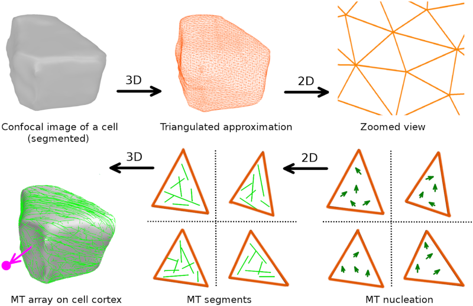

Introduction
Plant morphogenesis is strongly dependent on the directional growth and the subsequent oriented division of individual cells. It has been shown that the plant cortical microtubule array plays a key role in controlling both of these processes. This ordered structure emerges as the collective result of stochastic interactions between large numbers of dynamic microtubules. A number of analytical and computational approaches to studying the dynamics of cortical microtubules have been proposed in order to elucidate this complex self-organization process. To date, however, these models have been restricted to two-dimensional planes or geometrically simple surfaces in three dimensions, which strongly limits their applicability as plant cells display a wide variety of shapes. This limitation is even more acute, as both local as well as global geometrical features of cells are expected to influence the overall organization of the array. CorticalSim3D is a framework for efficiently simulating microtubule dynamics on triangulated approximations of arbitrary three-dimensional surfaces. This allows the study of microtubule array organization on realistic cell surfaces obtained by segmentation of microscopic images.

Overview of the CorticalSim3D software, from https://doi.org/10.1371/journal.pcbi.1005959
CorticalSim3D was derived from the original 2D version CorticalSim, a plant microtubule cortical array simulation tool created by Simon Tindemans and Eva Deinum. (https://zenodo.org/records/801852)